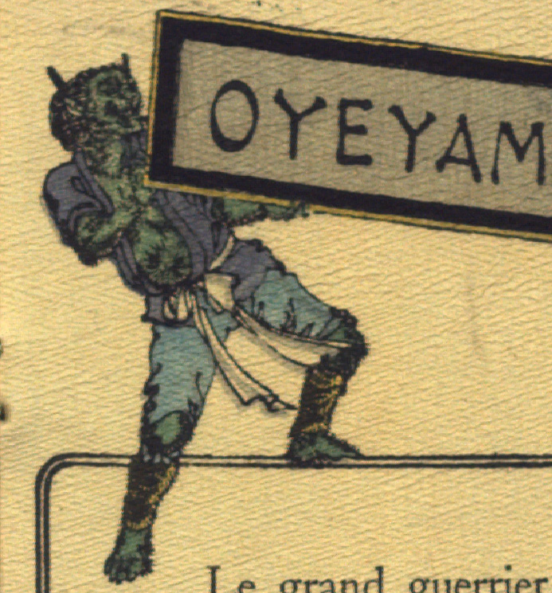

緑色の肌の鬼。頭部に縮れた毛が生え、2本の角が生えている。口は大きく裂けている。青い上着を着て、胸元をはだけ、水色の股引と黄色の脚絆を着けている。腹や腕に毛がもじゃもじゃと生えている。両手で物語の題名が書かれた額を持ち、両足を踏ん張っている。
出典：親書誌：U426_nichibunken_0113：Les Ogres d'Oyeyama／日付：2006／資源識別子：U426_nichibunken_0113_0002_0001
Copyright (c)2010- International Research Center for Japanese Studies, Kyoto, Japan. All rights reserved.